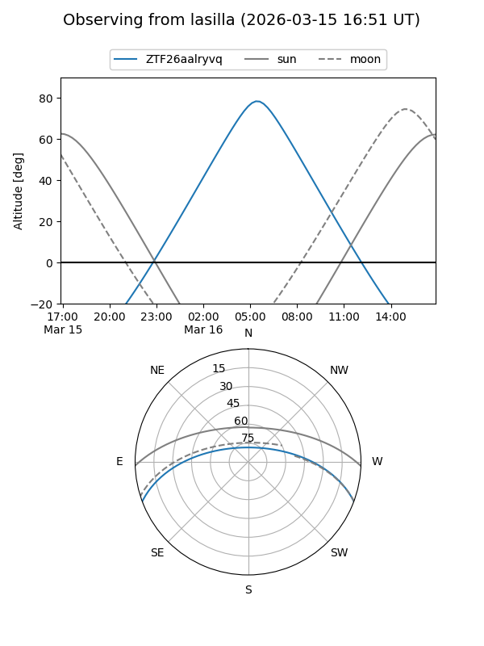
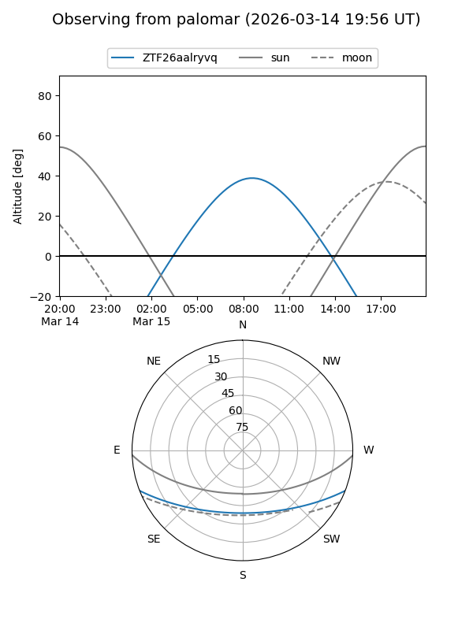

ZTF26aalryvq
Target ZTF26aalryvq at 2026-03-15 10:40
Aliases and brokers:
FINK: link
Lasair: link
ALeRCE: link
alt names
ZTF26aalryvq (ztf,fink_ztf)
Coordinates:
equatorial (ra, dec) = 184.4866,-17.62053
equatorial (HMS+DMS) = 12:17:56.79,-17:37:13.92
galactic (l, b) = (291.7080,+44.52009)
Flags:
Photometry:
last ztfg=19.72
1 ztfg detections
Lightcurve
Visibility


Additional plots